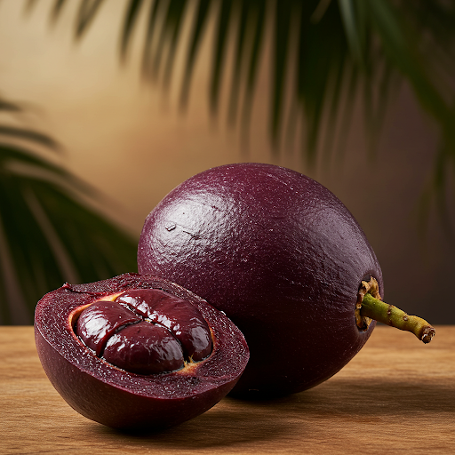

O Açaí
O açaí (Euterpe oleracea) é um fruto roxo-escuro, pequeno e arredondado, originário da Amazônia. Ele é considerado um "superfruto" devido à sua alta concentração de antioxidantes, vitaminas e minerais. O açaí é consumido de diversas formas, como sucos, smoothies, sorvetes e cremes.
Como Plantar Açaí
O açaizeiro (nome da planta que dá o açaí) adapta-se bem a climas quentes e úmidos, e solos férteis e bem drenados. O plantio pode ser feito a partir de sementes ou mudas. As mudas geralmente começam a produzir frutos após 3-5 anos.
Passo a passo:
- Escolha um local com boa incidência de luz solar.
- Prepare o solo, cavando um buraco com cerca de 50 cm de profundidade.
- Coloque a muda no buraco e cubra com terra, deixando a parte superior da raiz exposta.
- Regue a muda abundantemente.
- Mantenha o solo úmido, mas não encharcado.
- Adube o açaizeiro a cada 3 meses.
Benefícios do Açaí
O açaí é um alimento rico em nutrientes e oferece diversos benefícios para a saúde:
- Antioxidantes: combatem os radicais livres e previnem o envelhecimento precoce.
- Energia: fornece energia para o dia a dia.
- Fibras: auxiliam no bom funcionamento do intestino.
- Vitaminas e minerais: fortalecem o sistema imunológico.
- Gorduras boas: contribuem para a saúde cardiovascular.